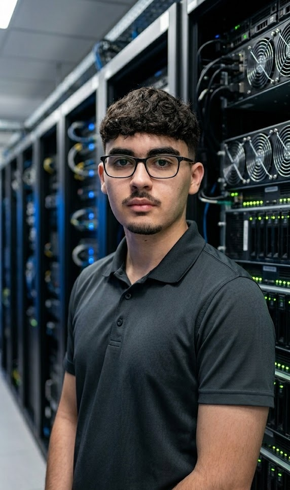

¡Hola, soy!
Mohamed Serroukh
El Assiri
SysAdmin & Network Technician
Asegurando la continuidad tecnológica mediante infraestructuras robustas, seguras y escalables. Apasionado de la Informática.

Mi Filosofía IT
Mi misión va más allá de mantener servidores operativos. Consiste en garantizar que la tecnología sea el auténtico motor de productividad de la empresa.
En la recta final del Grado Superior en ASIR, mi experiencia abarca desde el despliegue de redes corporativas hasta la centralización segura de sistemas de información. Comprendo el ecosistema IT como un entorno vivo que requiere prevención, optimización y rapidez de respuesta.
Busco un equipo donde pueda sumar mi proactividad técnica, rodeado de especialistas senior que me desafíen a crecer mientras aporto valor real desde el primer día.
Arquitectura Híbrida
Gestión de infraestructura física y virtual. Despliegue de servidores on-premise y administración de entornos virtualizados para la escalabilidad de servicios. Mi próxima frontera profesional persigue el domino del Cloud Computing y la Ciberseguridad.
Soporte Estratégico
Excelente destreza en la gestión del usuario corporativo. Transformo tecnicismos en soluciones prácticas para evitar cualquier impacto en su flujo de trabajo.
Evolución Constante
El estancamiento no es una opción. Avanzando hacia la Ingeniería Informática para consolidar una base Informática de alto nivel técnico.
Trayectoria Profesional
Técnico de Soporte e Infraestructura IT
Consorci Sanitari del Maresme (Hospital de Mataró)
- Despliegue de Sistemas: Instalación de SO y configuración de software clínico
- Comunicaciones VoIP: Configuración, despliegue y resolución de incidencias en terminales de telefonía IP.
- Hardware Crítico: Diagnóstico y reparación de equipamiento informático para garantizar la disponibilidad del servicio sanitario 24/7.
- Soporte: Resolución de incidencias técnicas complejas y gestión de peticiones de usuario.
Técnico de Sistemas y Redes
Coworking Anfora Mataró
- Administración de Identidades: Gestión centralizada de usuarios y dispositivos mediante Active Directory y despliegue de GPOs.
- Infraestructura de Red: Administración de la red física (switches, routers y cableado estructurado) y garantía de políticas de seguridad.
- Soporte Multi-cliente: Resolución proactiva de incidencias N1 y N2, minimizando el tiempo de inactividad de los usuarios.
- Consultoría de Hardware: Evaluación técnica avanzada para el diagnóstico, reparación y optimización de activos tecnológicos de la empresa.
- Securización de Endpoints: Despliegue, configuración y fortalecimiento (hardening) de estaciones de trabajo Windows.
Formación Académica
Técnico Superior en Administración de Sistemas Informáticos en Red
IES Thos i Codina
Especialización en administración avanzada de sistemas, gestión de servicios de red y seguridad perimetral. Focus en: Gestión de Redes, Seguridad de Redes y Servicios de Internet.
Técnico Medio en Sistemas Microinformáticos y Redes
IES Thos i Codina
Formación técnica enfocada en el montaje de hardware, mantenimiento preventivo de sistemas y soporte a usuarios finales.
Certificaciones Oficiales
CCST Cybersecurity
Cisco Certified Support Technician
SC-900
Microsoft Security & Identity Fundamentals
Python Specialist
IT Specialist in Python
Permiso B
Conducción y Movilidad
Mis Habilidades
Sistemas & Infraestructura
Redes & Ciberseguridad
¿Formar un equipo IT seguro y preparado? ¡Hablemos!
Estoy listo para sumarme a tu infraestructura tecnológica y proteger el activo más importante: la productividad y la seguridad de tu negocio. Escríbeme y agendemos una llamada.
Mataró y alrededores, España